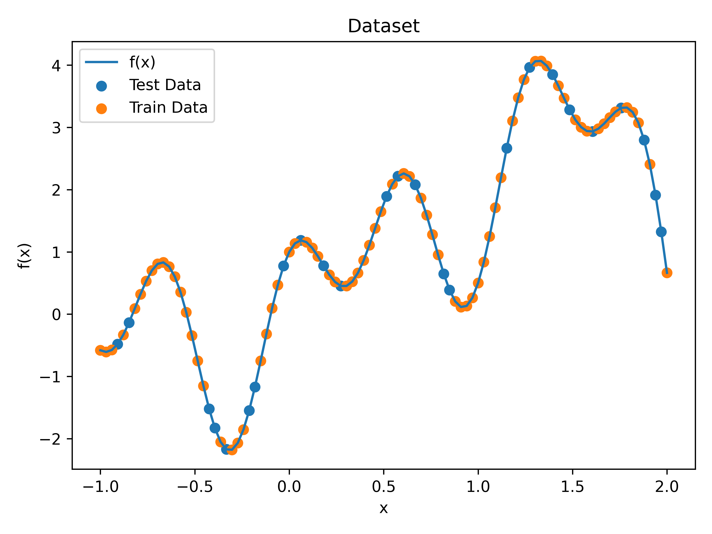
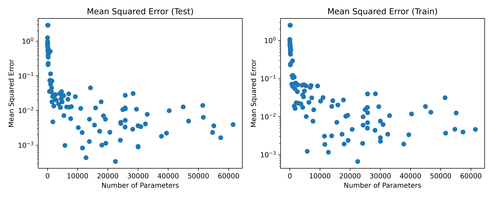
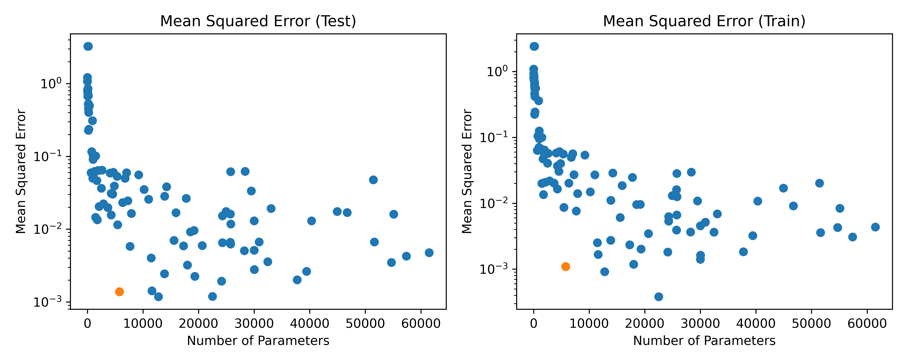
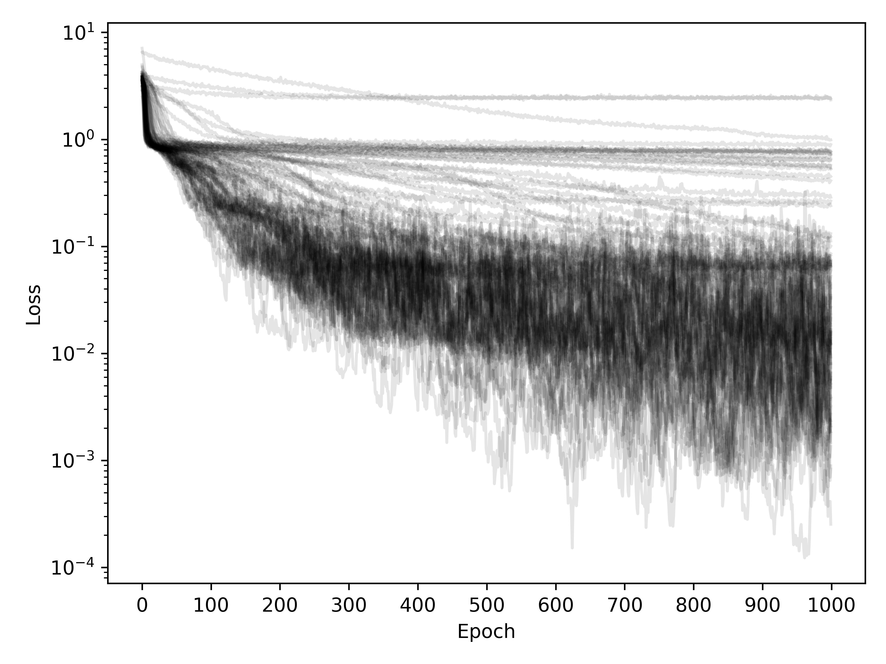
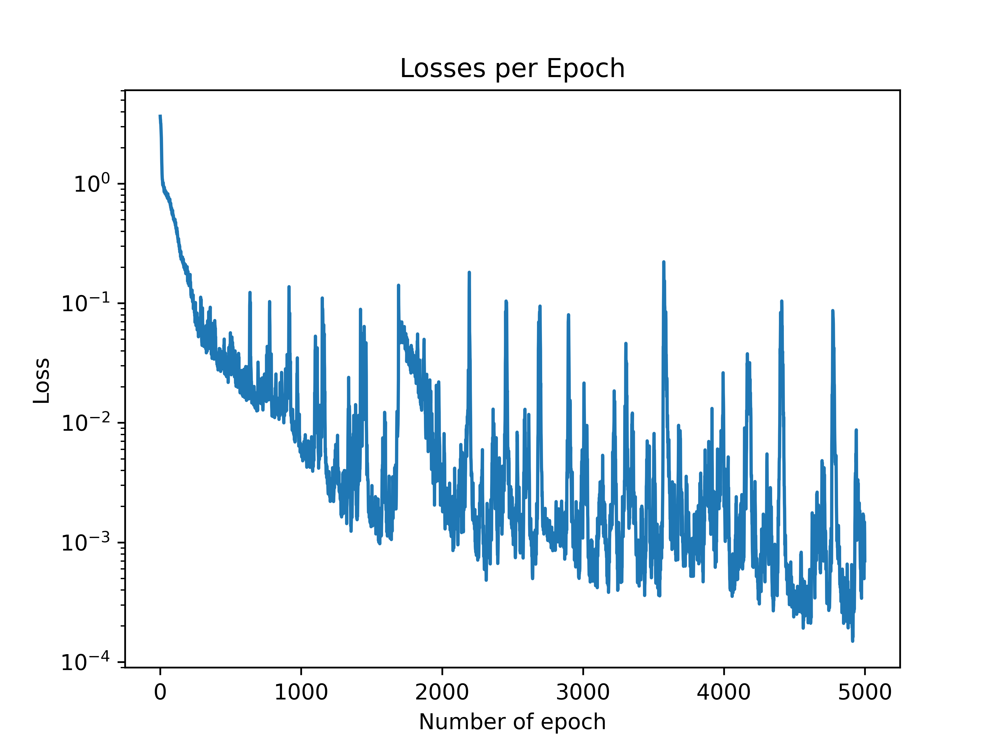
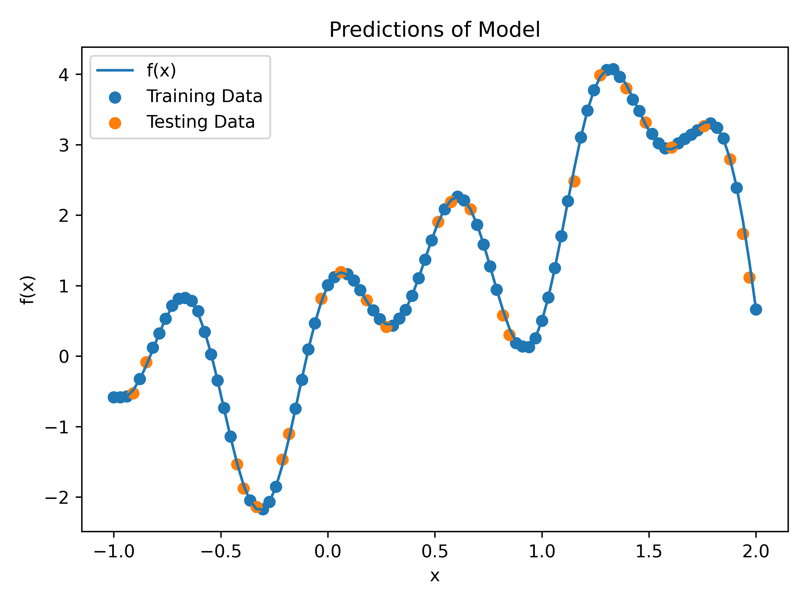

Nonlinear Regression
Data Acquisition
We first write the mathematical function as a python function and define it as:
def f(x: np.ndarray) -> np.ndarray:
return x + 1.5*np.power(x, 2) + 0.5*np.power(x, 3) - 0.7*np.power(x,4) + np.sin(5*x) + np.cos(10*x)We use the numpy functions since this allows us to broadcast the function of the whole array very efficiently. We then generate the data using the following code:
x = np.linspace(-1, 2, 100).reshape(-1, 1)
y = f(x)We split the data into training and testing data set using the split_data function and setting the parameter train_fraction = 0.75 such that the 75% of the data is used for training and 25% for testing. The data is visualised in a plot below

Training Models
Before we start training the model, we first define a save_model and load_model function such that we can save and load our trained model. This allows us not to have to train our models each time we run the notebook, which saves a lot of time.
To test how well the neural network can predict the function, we generate 100 different models. For each model we first generate a random integer between 1 and 10 that sets the number of hidden layers in the neural network. Next we generate another random number from 1 to 100 that sets the number of nodes in each hidden layer, such that each hidden layer had the same number of nodes. We also added and input and output layer to the neural network, such that the input layer had 1 node and the output layer had 1 node.
We then trained the models with 1000 epochs using the Adam optimizer and the MSELoss loss function. We saved the model with the lowest loss and saved the loss of the model in a list. We then plotted the loss of each model in a plot below.
After training we first save all the models such that we do not need to retrain them.
Evaluation
We then evaluated each model calculate the MSE as a function of the number of nodes. The plot is shown below.

We clearly observe that the test and training MSE decreases rapidly as the number of nodes increases unit about 10000 nodes. After this point the MSE does become very low in some instances but there is not clear pattern and it mostly looks like random noise. This might show that at the higher number of nodes the performance of the neural network might be heavily dependent on the initialisation of the weights, especially since the number of epoch we are using are limited.
Based on the plot of the MSE for the training and testing dataset we can choose the model that performs best. While we could choose the model with the lowest MSE on the testing dataset, this model might also have a large number of nodes that is unneccassary to fully represent the function. A model that somewhat stands out with a lower number of nodes but still performing well in training and testing error is marked in orange in the plot. We choose this model as the best model and evaluate it further.

The models layout is the following:
Nodes in Network: [1, 28, 28, 28, 28, 28, 28, 28, 1].Losses Per Epoch
We can also plot the losses per epoch for each of the models to see how much epochs they need to train the network util convergence. The plot is shown below.

We can see that some of the models already converge after a 100 or so epochs, which I presume to be the smaller neural networks that do not have a lot of parameters to adjust. However, the larger neural networks take a bit of longer time to converge, from the plot this usually happend at arround 500 epochs.
Now we look specifically at the best model and how many epochs it takes to converge.

We can see in the plot that the losses per epoch decrease very rapidly untial about 1500 epoch. Then we have a sudden spike in the losse per epoch and it slolwly decreases again. It seems to converge at about 3000 epochs.
Best Model
Now let’s look at how our best model performs when trying to predict the function \(f(x)\). We train the model for 4000 epochs. In our experiment the model already seemed to converge at 3000 epochs. However, since the initialisation of the model might heavily impact the performance of the model, we perform 4000 epochs in our training do smooth out any issues with initialization.
Predictions
The predictions of the model on the test and training data are shown in the plot with the original function

We observe that the model almost perfectly predicts the original function, only some of the data points from the test dataset seem to not exactly match the function.
Evaluations
When evaluating the model, we can clearly see from the \(R^2\) score the the model almost perfectly predicts the data. This is underlined by MSE and MAE on the training and test dataset which are all below \(10^{-1}\). However, the MSE and MAE scores also reveal that the model is slightly worse on the testing data compared to the training. This is expected. The MSE and MAE data sets are not too bad, such that they would suggest an overfitting of the model. To better test the performance of the model on unseen data, it might have been better to introduce some noise to the system.
Evaluation of Best Model:
Nodes in Network: [1, 28, 28, 28, 28, 28, 28, 1]
R2 score = 0.99811
MSE test = 0.0061 MAE test = 0.0557
MSE train = 0.0002 MAE train = 0.0108